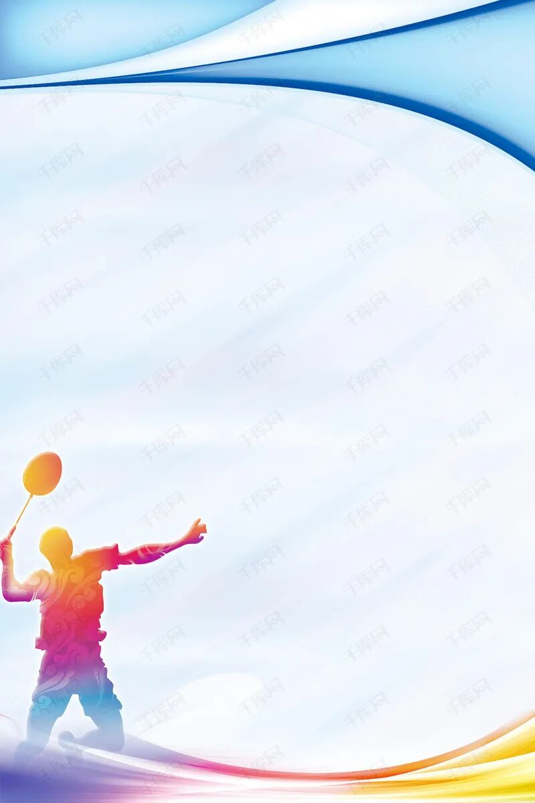

| 姓名 | 班级 | 学号 | 联系方式 | |
|---|---|---|---|---|
| 余雅露 | 计科213 | 21101100335 | 17378875602 | |
| 爱好 | 喜欢运动（排球，羽毛球等） |  | ||
| 喜欢宠物（最喜欢狗狗,尤其是柴犬） | ||||
| 喜欢追剧（最近新出的云之羽，还有我最爱的苍兰决，超推荐笔芯） | |
|||
| N0.1碧峰峡 | 碧峰峡植被，峡景，瀑布都是鲜明特色，峡谷内林木葱郁，时而高耸奇特，时而两山并合天光一线，并且大熊猫基地也在此处，吸引了许多国际友人来参观 |
|---|---|
| 牛背山 | 观景一绝之地，因山顶一面悬崖有块石头酷似牛头，山脊细长貌似牛背，可观景色之优美，和山河大好美景，不可错过 |